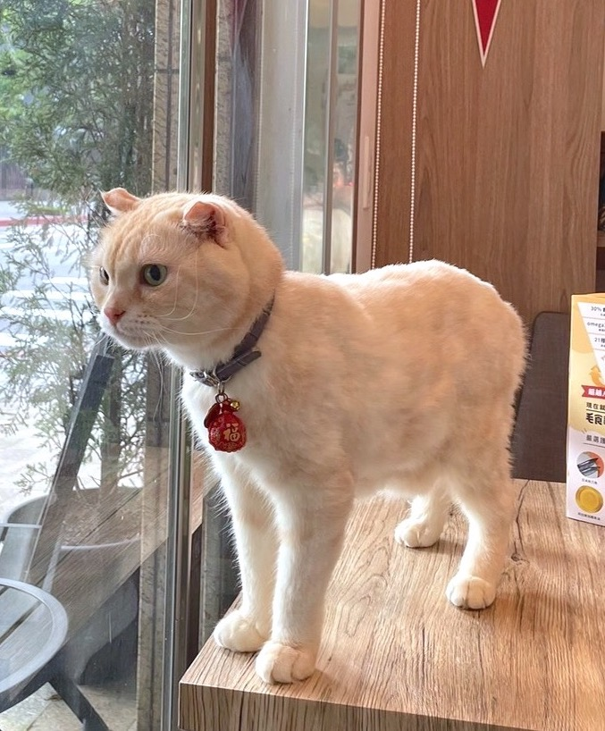

貓咪館
|
小叮噹 英國短毛貓British Shorthair |
|
|---|---|
 |
是一種耳朵有基因突變的貓。這種貓在軟骨部份有一個摺，使耳朵向前屈摺，並指向頭的前方。由於這貓種最初在蘇格蘭發現，所以以牠的發現地和身體特徵而命名。其後，這貓種在美國繼續繁殖，並演生成為今日的多個品種。現時蘇格蘭摺耳貓有以下兩對不同的特徵：長毛貓種及短毛貓種，及摺耳和豎耳貓種。 |
| 性格：像天使，溫柔婉約又善解人意。 | |
|
鍋巴 蘇格蘭摺耳貓Scottish Fold |
|
|  | 是一種耳朵有基因突變的貓。這種貓在軟骨部份有一個摺，使耳朵向前屈摺，並指向頭的前方。由於這貓種最初在蘇格蘭發現，所以以牠的發現地和身體特徵而命名。其後，這貓種在美國繼續繁殖，並演生成為今日的多個品種。現時蘇格蘭摺耳貓有以下兩對不同的特徵：長毛貓種及短毛貓種，及摺耳和豎耳貓種。 |
| 性格：像天使，溫柔婉約又善解人意。 | |